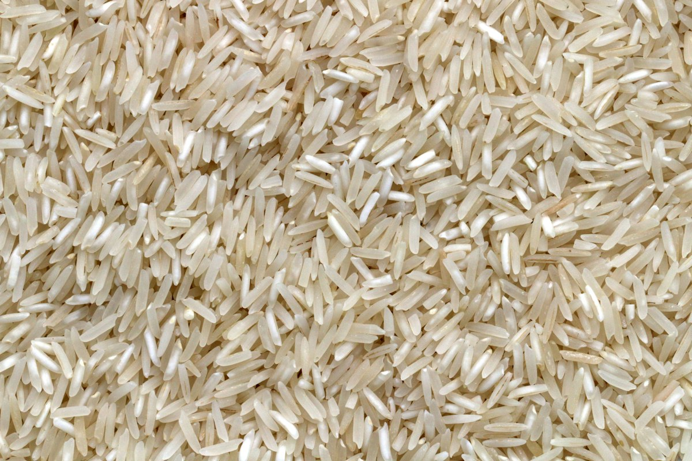
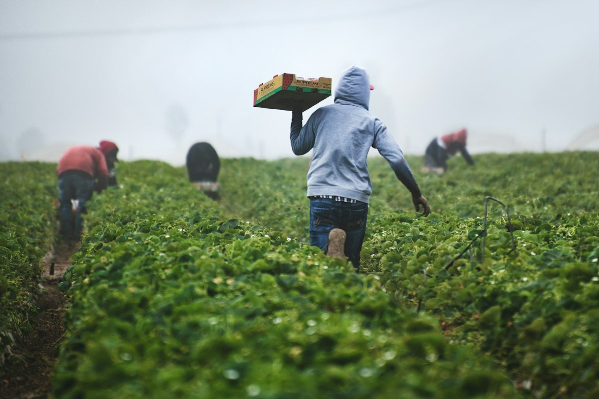
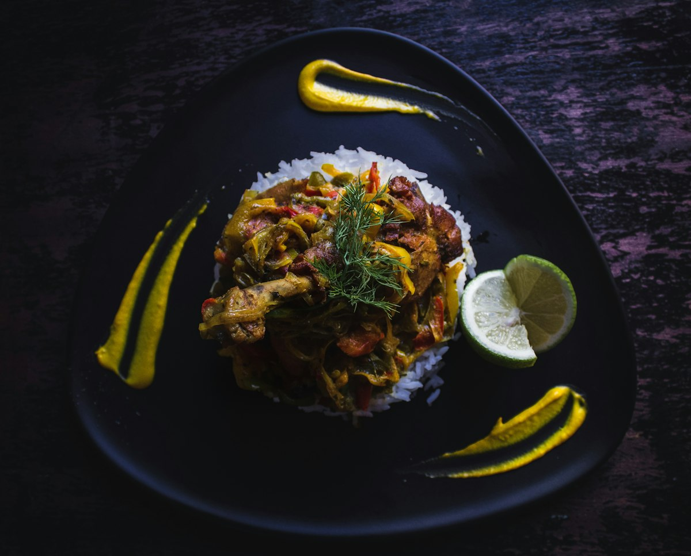
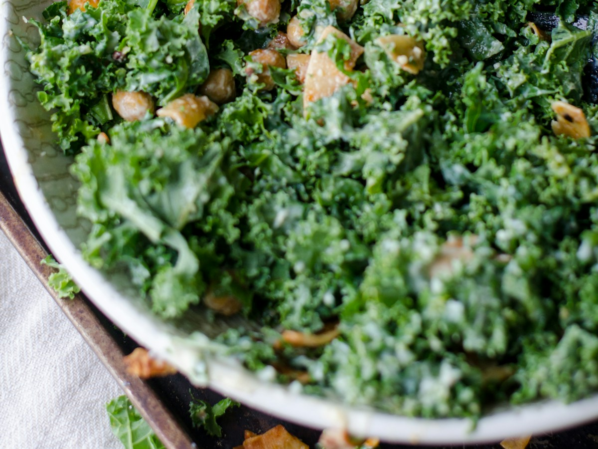
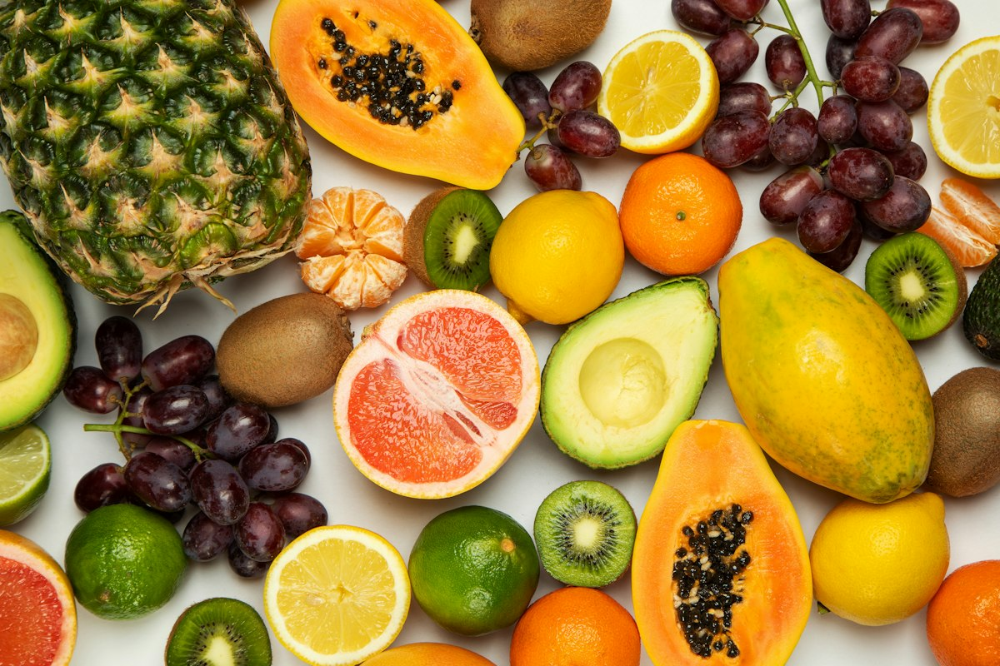
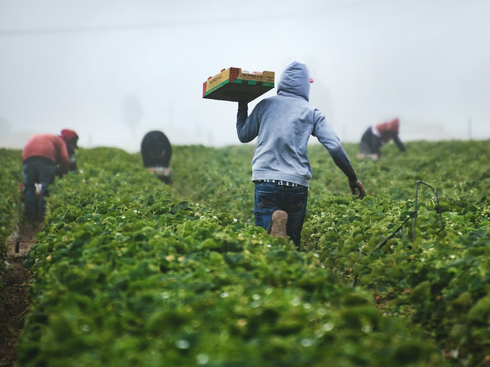
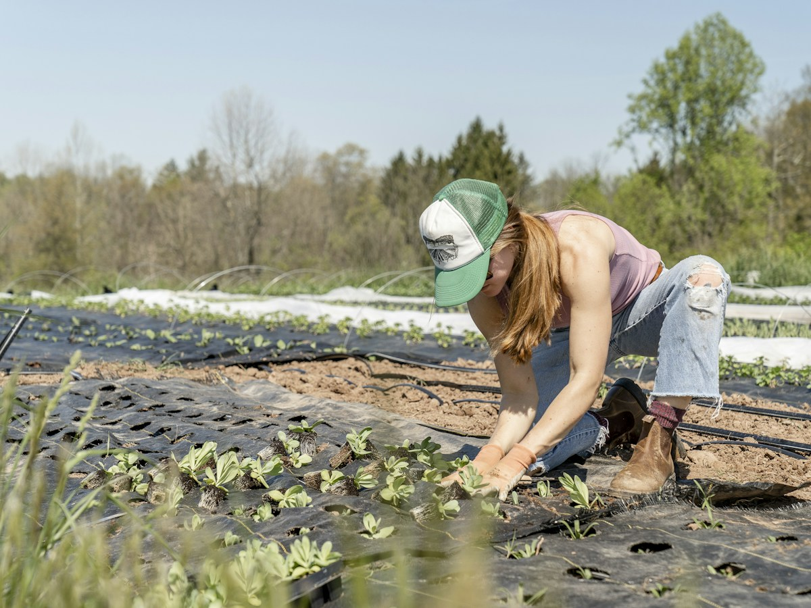
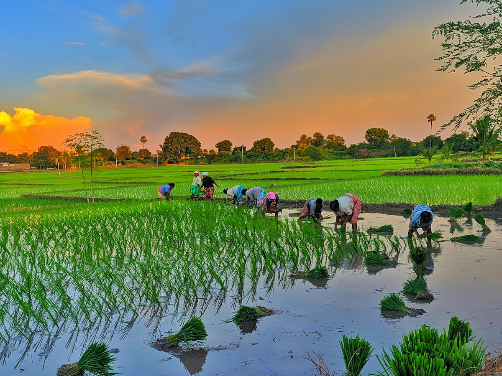
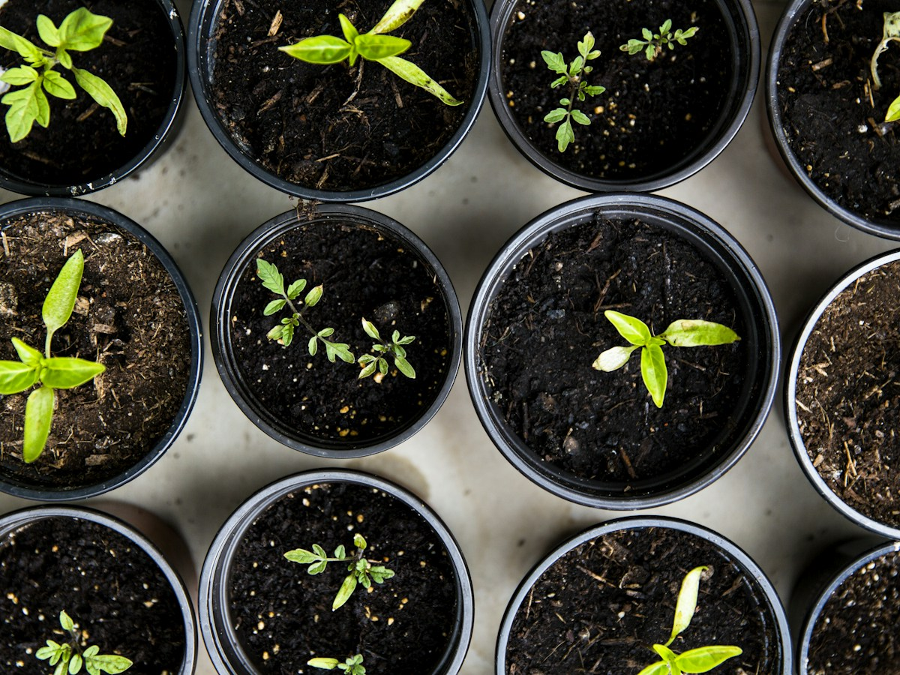
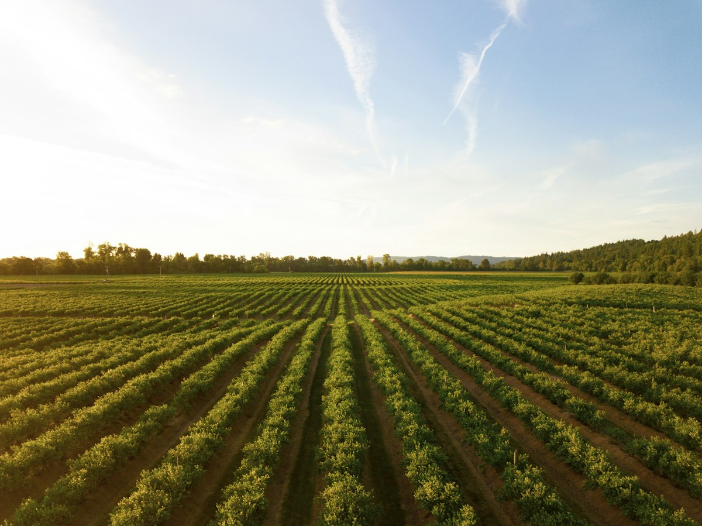

Rice & Grains
Paddy Rice (Traditional)
Sun-dried, whole paddy grains sourced directly from river basin member farms.
View DetailsSupporting farming communities through quality agricultural products, sustainable practices, and better market opportunities.

GreenRoots is an autonomous, farmer-owned Producer Company bringing together over 2,500 small and marginal agricultural producers. By pooling resources, adopting scientific soil stewardship, and aggregating produce at the farm gate, we eliminate layers of intermediaries and secure the value our growers deserve.
From Cauvery delta paddy terraces to rain-fed dryland millet clusters, every farmer member is a shareholder with equal governance rights, transparent market dividends, and year-round field extension support.
Real outcomes achieved through cooperative harvesting, certified input supply, and direct institutional buyer tie-ups.
Sun-ripened traditional paddy, nutrient-dense millets, pulses, and organic grains graded to Grade-A specifications.

Sun-dried, whole paddy grains sourced directly from river basin member farms.
View Details
Fibre-dense whole grain rice preserving natural bran layer, vitamins, and minerals.
View Details
Calcium-rich red ragi grains harvested from traditional dryland farmer clusters.
View Details
Low-glycemic heritage grain naturally grown with rain-fed irrigation.
View DetailsReal support programs designed to lower smallholder cultivation costs, improve climate resilience, and build intergenerational farming assets.
Subsidized rental access to modern laser levelers, paddy transplanters, and multi-crop combine harvesters, reducing farm labor costs by 35%.
Periodic on-farm soil testing measuring pH, organic carbon, and micronutrients with custom bio-fertilizer recommendations delivered via SMS.
Dedicated micro-processing units for women-led Self-Help Groups producing cold-pressed virgin coconut oils, graded pulses, and spice powders.
Interest-free seasonal seed input loans and automated crop insurance claim processing during unseasonal rains or severe monsoon deficits.

Our agronomists partner with village clusters to implement climate-resilient practices tailored to local soil topographies. By combining ancestral crop rotation wisdom with modern soil moisture sensors, our members cut water and synthetic input costs drastically.
A rigorous five-stage supply chain ensuring complete crop traceability, fair weighing, and rapid payments.
Smallholders register their acreage, expected crop varieties, and harvest windows with village coordinators.
Scheduled pickup trucks reach the farm with certified digital scales, eliminating middleman transport costs.
In-house laboratories check seed viability, foreign matter, and moisture percentage against FSSAI baselines.
Produce is transferred into breathable jute bags, barcode labeled with grower cluster origin data.
Bulk consignments are delivered to registered trade partners with instant direct-bank settlements to farmers.
Incorporated under the Companies Act and guided by NABARD guidelines, GreenRoots is 100% owned, governed, and operated for the collective benefit of small and marginal growers.
Unlike corporate agribusinesses, share ownership in GreenRoots cannot be concentrated. Every enrolled farmer holds equal voting rights regardless of land acreage, ensuring smallholders have a decisive voice in all major cooperative policies.

Real stewards of the land who lead village production clusters and govern company decisions.

Thanjavur, Tamil Nadu
Third-generation farmer leading a 120-member organic paddy production cluster.

Erode, Tamil Nadu
Coordinates 40 women growers for centralized sorting and value addition of toor dal.

Rajkot, Gujarat
Pioneered drip-irrigated bold groundnut cultivation with 35% higher kernel density.

Theni, Tamil Nadu
Supplies premium grade Cavendish and Nendran bananas to institutional supermarket chains.
Genuine feedback from the farming families who supply our produce and wholesale buyers who rely on our quality.
Field-tested insights, sustainable pest control methods, and seasonal mandi intelligence.
2026-10-20
Botanical sprays, trap crops, and beneficial predator insects that cut chemical expenses and protect pollinators.
Read Article2026-10-19
How smallholders are halving freshwater consumption and cutting weed emergence with subsidized gravity drip kits.
Read Article2026-10-18
A woman member farmer details how collective aggregation and direct flour processing transformed her dryland crops.
Read Article
Source consistent multi-ton volumes of graded grains, pulses, and spices straight from organized farmer clusters. We provide verified lab certificates, lot traceability, and scheduled delivery pipelines.
Join thousands of farmers, food processors, and conscious buyers strengthening rural livelihoods through collective enterprise.